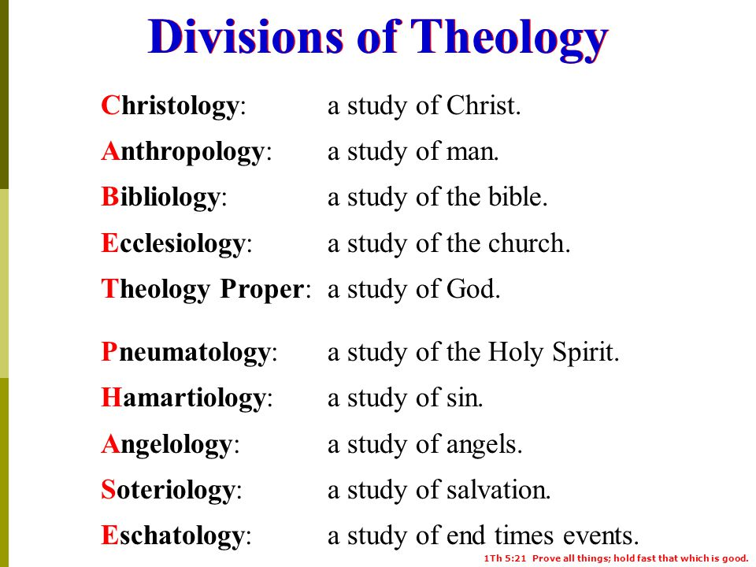

목차
- 9/1
- 9/2
- 9/3
- 9/4
9/4 Bible Class

Introduction
The Divisions of Theology
- There is more than one way to divide the
functions of theology and theology is used
to encompass biblical, historical, philosophical,
and theological studies:
- Biblical theologyorganizes the theological
teachings in the Bible according to prominent biblical themes.
- Historical theology studies the development of theology
from biblical times to the present.
- Systematic theology arranges Christian beliefs, values,
and practices in an orderly and comprehensive manner.
- >Philosophical theology interacts with philosophy
in establishing theology.
- Practical theology applies Christian beliefs to
the church and the world.